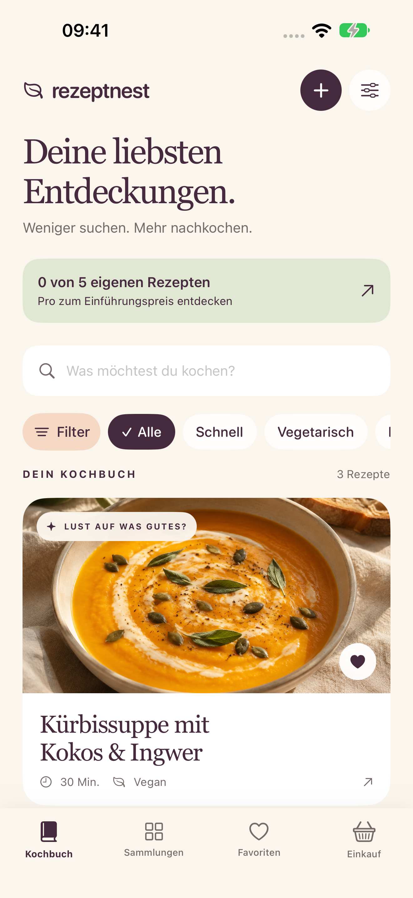
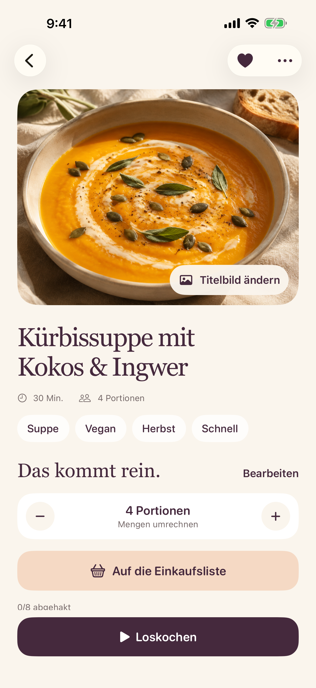
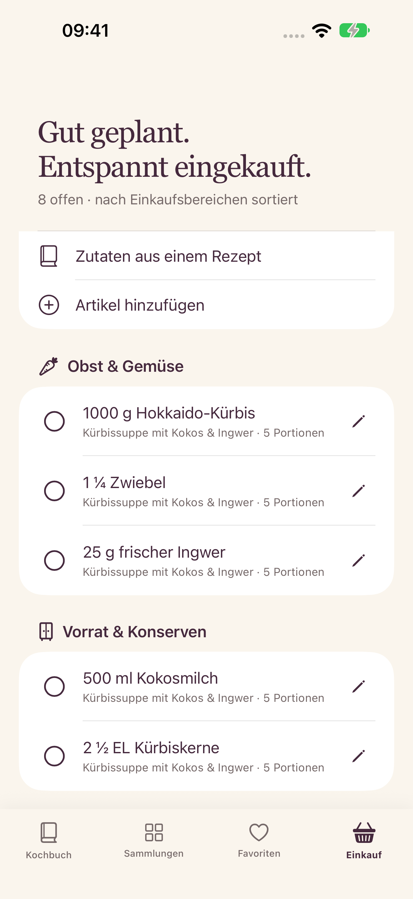

Entdeckt.
Gespeichert.
Teile Links mit Rezeptnest, füge Rezepttexte ein oder übernimm Text aus einem Screenshot.
Für die Ideen, die du wirklich nachkochen möchtest. Sammle deine liebsten Entdeckungen und mach dein eigenes Kochbuch daraus.
So funktioniert Rezeptnest ↗Ohne Konto. Ohne Werbung. Ganz persönlich.

Teile Links mit Rezeptnest, füge Rezepttexte ein oder übernimm Text aus einem Screenshot.
Kombiniere Kategorien, suche nach Zutaten und finde deine Favoriten wieder.
Rechne Portionen um, hake Zutaten ab und folge der Zubereitung Schritt für Schritt.

Eigene Kochfotos, kleine Notizen und genau die Zutaten, die du magst. Wähle dein Lieblingsfoto als Titelbild – das Original bleibt erhalten.
Deine Rezepte liegen auf deinem iPhone. Mit einem Backup sicherst du dein Kochbuch inklusive Fotos.
Mehr über deine Daten ↗Wähle die Portionen, übernimm die Zutaten und ergänze, was sonst noch fehlt. Deine Einkaufsliste ordnet Artikel nach Supermarktbereichen – und lässt dir jederzeit die Wahl.
Lieber Apple Erinnerungen? Sende offene Artikel an eine deiner Listen. Es entstehen Kopien, die du dort unabhängig abhaken kannst.

Fünf eigene Rezepte und drei optionale Beispiele sind kostenlos. Einkaufsliste, Portionen und Kochmodus bleiben dabei. Pro schaltet unbegrenzt eigene Rezepte frei: einmal zahlen, dauerhaft nutzen.
Bis 31.12.2026 einmalig 1,99 €, ab 01.01.2027 regulär 3,99 €. Dein Pro-Zugang bleibt dauerhaft. Kein Abo.
Preise für Deutschland. In anderen Ländern gilt der im App Store angezeigte lokale Preis. Erhältlich als In-App-Kauf in Rezeptnest.
Kein Abo. In anderen Ländern gilt der lokale App-Store-Preis.
Drei optionale Beispielrezepte helfen dir beim Ausprobieren. Oder speichere direkt dein erstes Lieblingsrezept.
Zur HilfeFür iPhone ab iOS 17. Die optionale Strukturierung mit Apple Intelligence benötigt ein unterstütztes iPhone, iOS 26 oder neuer und aktivierte Apple Intelligence. Öffentliche Beschreibungen und Vorschaubilder sind nicht bei jeder Quelle verfügbar. Rezeptnest analysiert keine Videos und ist unabhängig von Instagram und Meta. Die Beispiel-Foodbilder in der App sind KI-generiert.